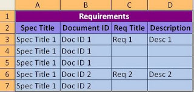
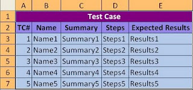
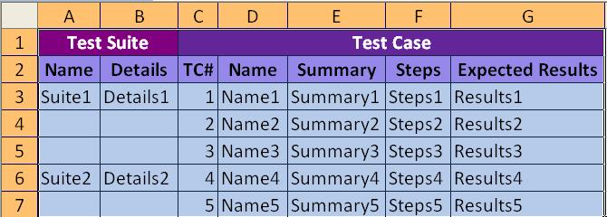
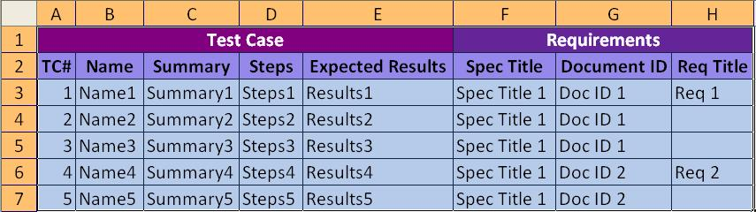
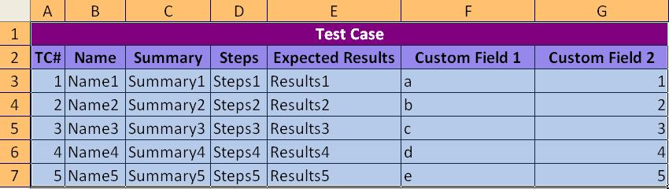
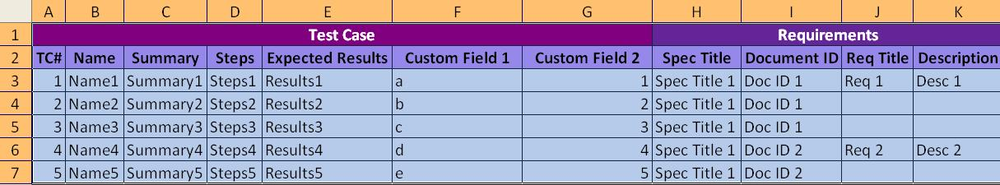
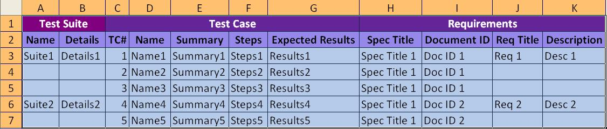
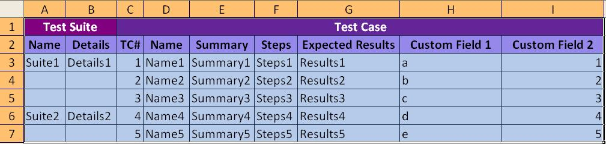
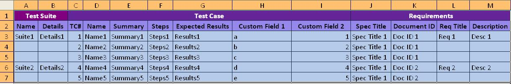

Import script for TestLink
Project maintained by amedee Hosted on GitHub Pages � Theme by mattgraham
Import
Requirements:
The Excel format to be used is given below.
Spec Title: The Requirement
Specification Title (This can be left empty, since this is only for
mapping requirements with test cases. But, this column must be present.)
Document ID: This is the unique
requirement reference number. (Must be unique when importing
requirements. But, when importing test cases or test suites with
requirements, multiple test cases can be mapped with single
requirement. For more details, please see other import formats below.
Req Title: This is the title of the
requirement. This is also unique. Each Document ID is mapped with a Req
Title.
Description: This is the detailed
description (Scope) of the requirement.

Import
Test Cases:
The Excel format to be used is given below.
TC#: This is the Test Case Serial
Number. It should start from 1 and be in sequence. This is also unique
(even across test suites).
Name: This is the Test Case Name.
This is also unique for a test case.
Summary: This is the Test Summary, a
brief about the Test Scenario.
Steps: This section is for writing the
steps for execution of the test case.
Expected Results: This is the results
expected on executing the test case.

Import Test Suites with
Test Cases:
The Excel format to be used is given below.
Name: Name of the Test Suite. Test
Cases must be grouped under each Test Suite exactly as given below.
This is unique.
Details: Details about the Test Suite.

Import Test Cases with
Requirements:
The Excel format to be used is given below.

Import Test Cases with
Custom fields:
The Excel format to be used is given below.

Import Test Cases with
Custom Fields and Requirements:
The Excel format to be used is given below.

Import
Test Suite with requirements:
The Excel format to be used is given below.

Import
Test Suite with Test Cases having Custom Fields:
The Excel format to be used is given below.

Import Test Suite with
Custom Fields and Requirements:
The Excel format to be used is given below.
